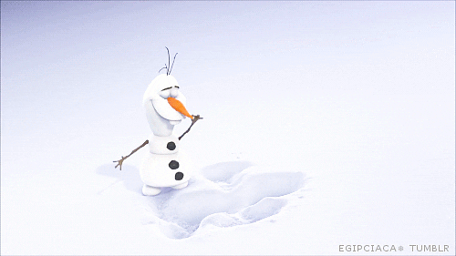

Frozen is een Amerikaanse animatiefilm uit 2013 geproduceerd door Walt Disney Animation Studios. Het is de 53ste animatiefilm van Disney. Het verhaal is losjes gebaseerd op het sprookje De sneeuwkoningin van de Deense schrijver Hans Christian Andersen.
Er zijn twee prinsessen in het koninkrijk Arendelle: Elsa (Idina Menzel), de troonopvolgster, en haar jongere zus Anna (Kristen Bell). Elsa heeft magische krachten, waarmee ze sneeuw en ijs kan creëren.
